Install
To start, download Dev C++ 5.9.2. It's completely free. Later versions have more features in terms of editing, completion, etc, but have issues with the debugger. Use at your own risk.
Default settings should be correct:
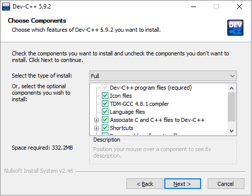Creating a Project
Once the install completes, create a project:
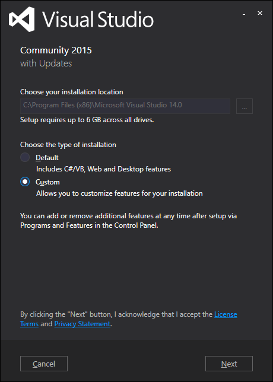Select “console application,” “C++ project,” and name your project:
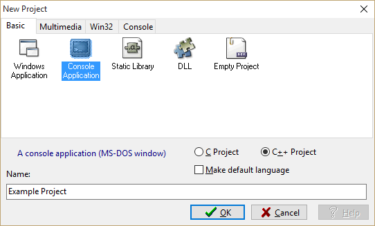Save your project in a new folder:
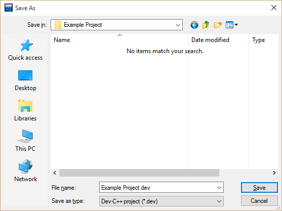Your project should now look like this:
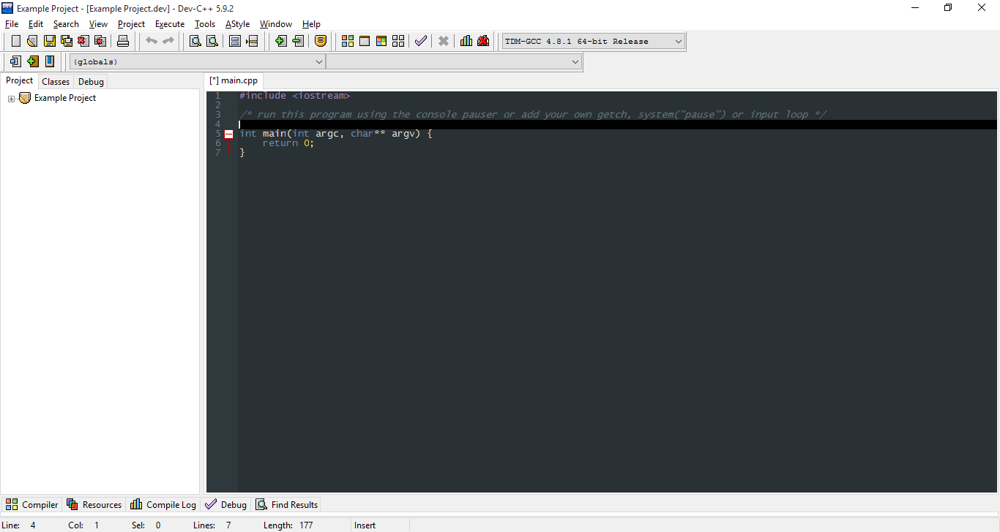Save the main.cpp file (to the same folder), rename it if you’d like:

You should now have a working project. To change compiler/linker settings:
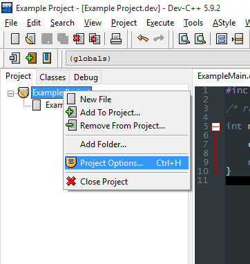Here you can change project settings like name, type, icon, etc. To enable debugging information, enable Compiler > Linker > Generate Debugging Information (-g3). I'd also recommend enabling warnings (Compiler > Warnings > Show Most Warnings, Show More Warnings). For now, you will only be interested in the “General,” “Output,” and maybe the “Compiler” and “Directories” tabs.
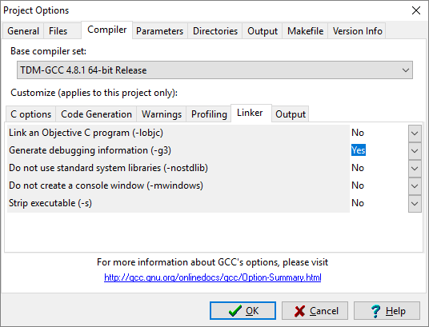Build
If you are satisfied with your settings, write a “hello world” program and press F11 to compile and run:
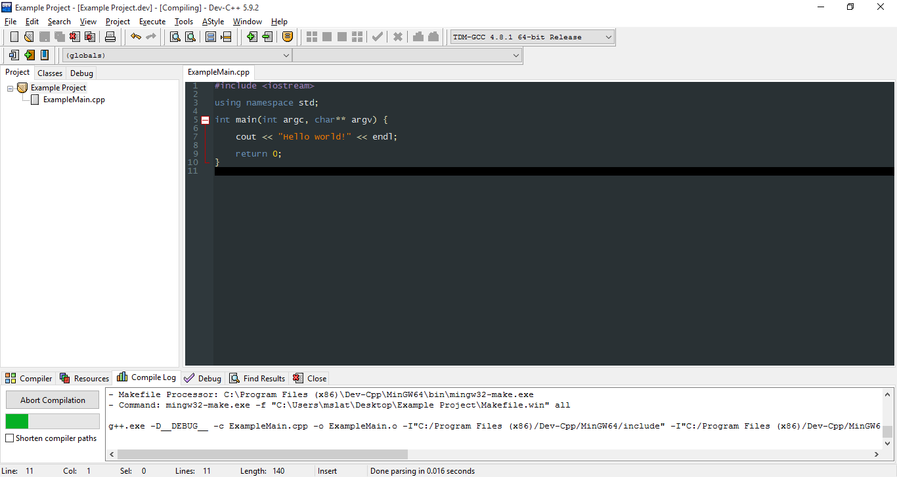If you set up your project correctly, you should get what you expect.

Adding Files
To add non-code files to your project, such as text or data for input:
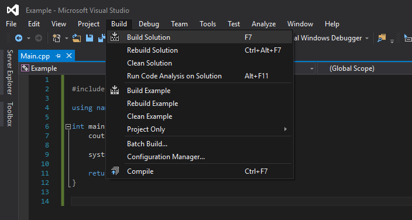To add a class:

Here, name your class and add a default constructor/destructor:

An .h and .cpp file for your class should appear. Save them both to your project folder.
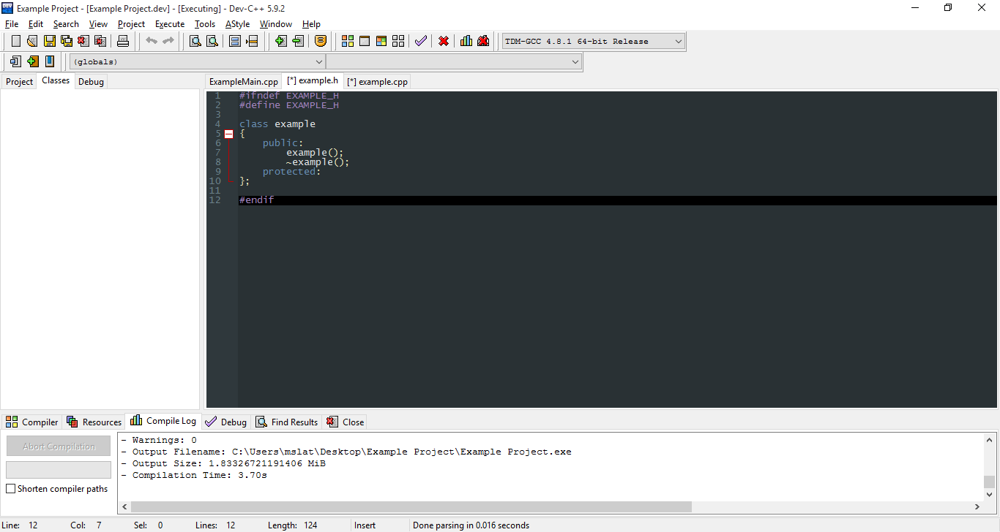In the .h file, you can replace all of the # statements with “#pragma once” if you’d like. This makes sure that if your .h file would be included more than once, it is only included once:
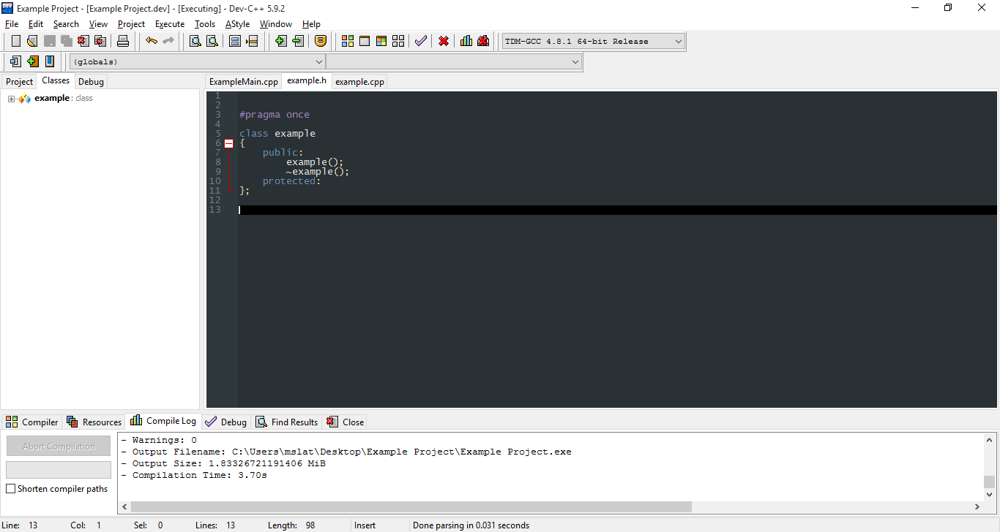To use your class in the main file, simply include your new .h file, using quotes. Try compiling this, to make sure everything is working. To add more classes, simply repeat this process.
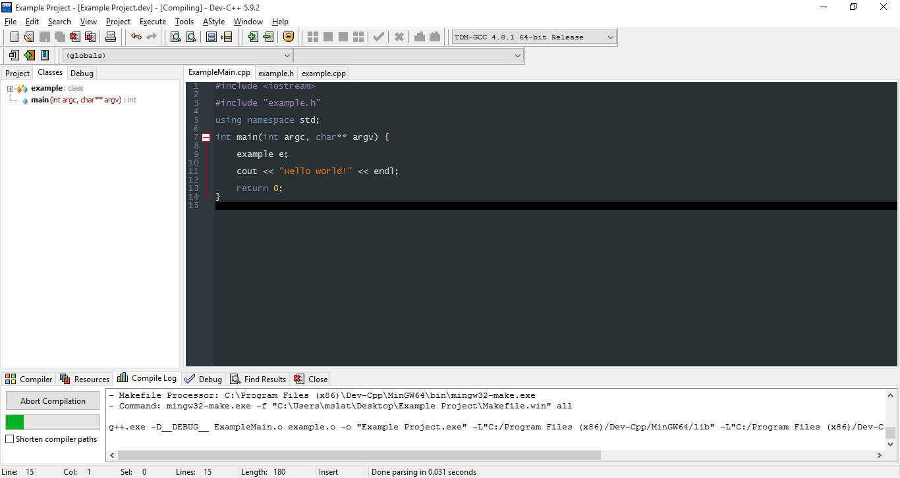Finally, you are finished! Remember to save your project settings when you close Dev C++. Your project folder should now have several unfamiliar files. The .dev file is your project, and is what you will open when you want to work on your project. The .layout, .o, and makefile files are all byproducts of compiling with multiple files, so leave them be and you should be good.
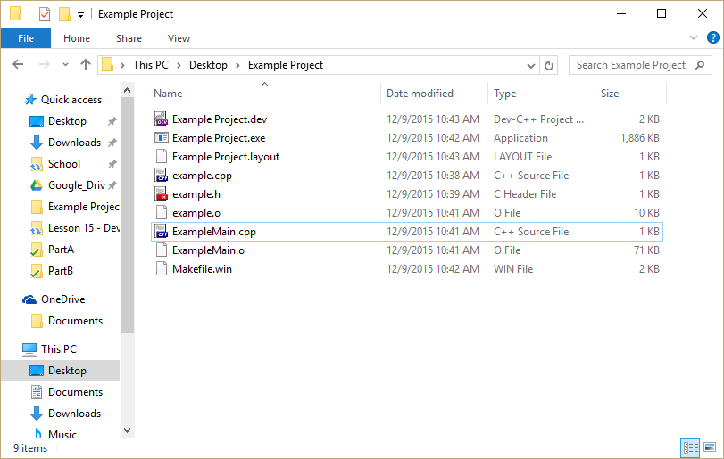